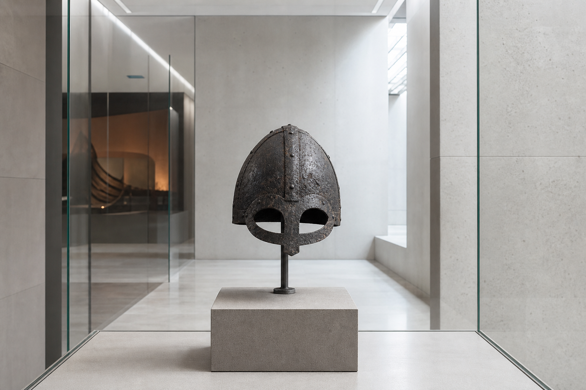
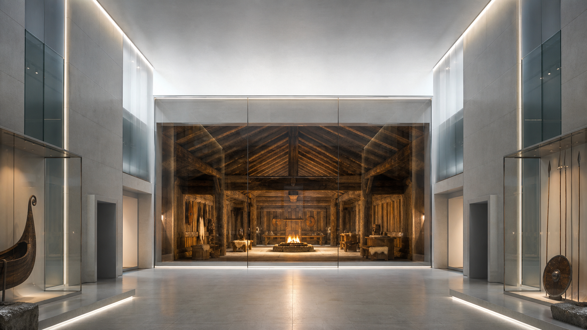
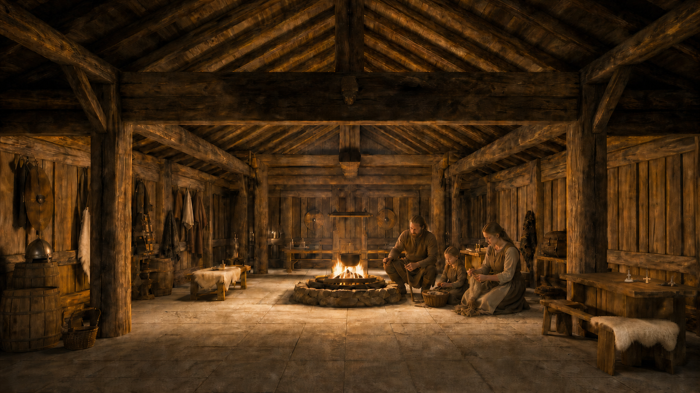
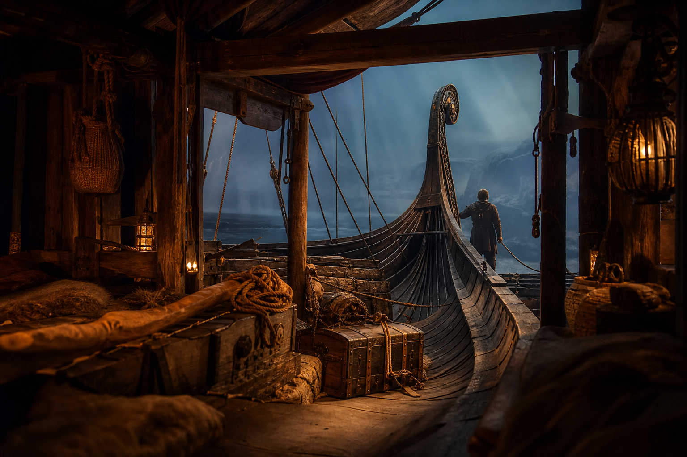
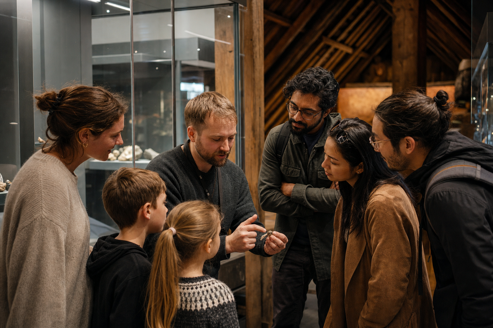
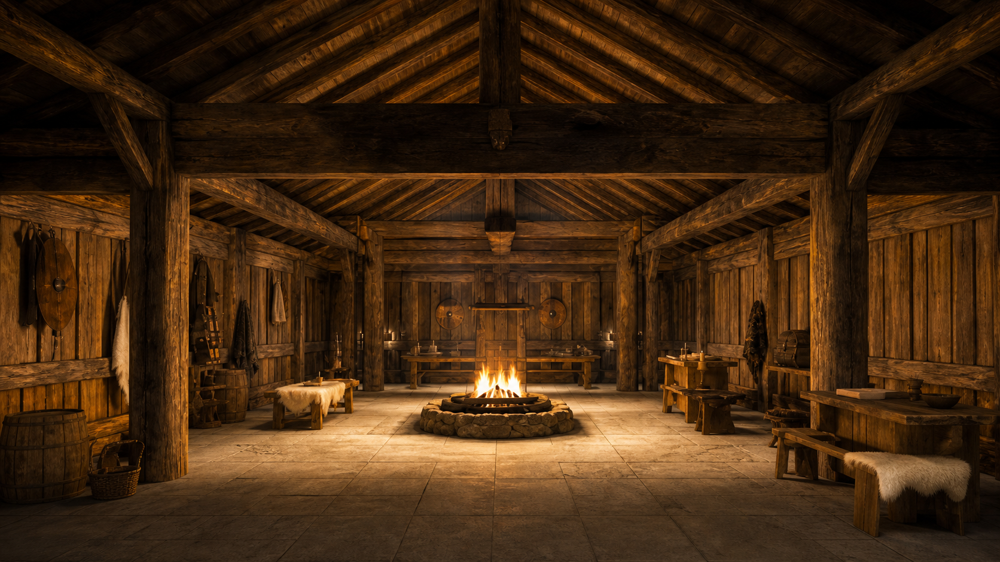

Föremålen
Kom nära spåren som finns kvar: metall, trä, textil och berättelserna vi bygger omkring dem.
Se vad de berättar

Välj ett spår i rummet.
Välj en punkt med mus, beröring eller tangentbord. Tryck Escape för att stänga ett öppet spår.
The Viking Museum · Stockholm
Vikingatiden finns inte kvar. Men spåren gör det.
Kom närmare människorna bakom bilden.
The Viking Museum
Här möter du inte en enda färdig berättelse. Föremål, rekonstruktioner och röster visar hur livet kunde ta form — hemma, på resan och i mötet med andra.

Kom nära spåren som finns kvar: metall, trä, textil och berättelserna vi bygger omkring dem.
Se vad de berättar
En elva minuter lång resa från gården och ut i den värld som vikingatidens människor färdades genom.
Upptäck åkturen (öppnas i ny flik)
Möt vikingatiden genom guider, gestaltade miljöer och en kostnadsfri audioguide på tio språk.
Planera ditt besök (öppnas i ny flik)
Interaktiv upplevelse
Börja med bilden du redan har. Genom tio val växer en viking fram som du kan skriva ut, vika och ta med hem.
Börja bygga→

Djurgården · Stockholm
Vardagar 11–17 · helger 10–17. Sommar, lov och helgdagar kan ha andra tider.
Se avvikande tider (öppnas i ny flik)Möt museets guider och låt föremålen öppna fler berättelser.
Se dagens turer (öppnas i ny flik)Utforska utställningen tillsammans. Ragnfrids saga rekommenderas från 7 år och audioguiden finns på tio språk.
Om Ragnfrids saga (öppnas i ny flik)